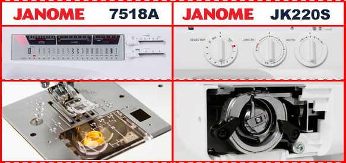

|
Приветствую всех, кто заглянул в нашу рубрику обзоров и сравнений. В этот раз изменим старым традициям и сравним две машины с разными челночными устройствами, но одного производителя. А производителем, интересующим большую часть аудитории, является Janome. А подопытными станут Janome 7518 A и Janome JK 220 S. Поднимем актуальную на сегодняшний день тему для большинства потенциальных обладателей швейной машины. Взяв одну ценовую линию мы попробуем разобраться в главных отличительных особенностях вертикального качающегося челнока от вращающегося горизонтального. Правда, стоит упомянуть, что это достаточно частный случай, касающийся рассматриваемых нами электромеханических машин. И конечно не стоит забывать, что мы заодно изучаем и специфику конкретных моделей. Вот с этого и начнем… Первой на складе нам в руки попалась коробка с 7518А - начало положено! Первым делом опишу то, что случилось при распаковывании машины. Думаю, владельцы данной модели поймут меня. А произошла довольно забавная вещь: при поднятии машины из коробки самопроизвольно отделился «свободный рукав» - ящик, в котором хранятся аксессуары. Сразу можно отнести это к минусам. Проверив несколько раз, можно заметить не очень надежное крепление. Частое использование контейнера может привести к дальнейшим неудобствам. Ну вот машина и на столе, рассмотрим её. Внешне она не сильно выбивается из линейки 75 серии и её аналогов (ME W23U, ME 1221 и тд). Внушительная и тяжелая. Зная вес машины, сразу вспоминается прошлый век, и не найдя пластмассовой крышки в задней части «восемьнашки», убеждаемся в том, что имеется одна только станина. А это довольно старое техническое решение, проигрывающее в шумоизоляции и выигрывающее в электропроводности, т. к. металл прекрасный проводник, а как раз это нам совсем не приветствуется. Под верхней крышкой находится катушкодержатель (большая бобина просто не смогла поместиться в отведенный для неё карман), шток намотки шпульной нити, регуляторы давления лапки на ткань и натяжения верхней нити. Эргономичности 7518 добавляют нитевдеватель и горизонтальный челнок. Видно количество нижней нити, удобная заправка и легкость в обслуживании (забыв о смазке, просто убирая иногда кисточкой пыль, продолжаем работать). Невозможно не заметить неудобство переключения длины стежка и ширины зиг-зага. Выполнены эти регуляторы в виде ползунков-переключателей, что существенно осложняет плавность выбора значений. Этот недостаток особенно явно проявляется, например, при выметывании петли, когда нужно очень точно выставить значение длины стежка. |
|  |
|
Возьмемся за JK 220S. Сходство с 7518А только в практически одинаковых швейных операциях, месте сборки (Тайвань) и, конечно, в электромеханическом классе обеих машин. В остальном машины различаются кардинально. Внешний вид у JK не вызывает ощущения огромного исполина, размер и вес машины вполне стандартные и соизмеряются с родственниками по классу. Более удобный и вместительный ящик для аксессуаров радует еще и надежным креплением. Три дисковых переключателя удобны в использовании. Длина стежка и ширина зиг-зага регулируются плавно, с возможностью множества промежуточных положений. Переключение операций слегка запутанно, сразу две строчки обозначены одним значением-буквой. Для того, чтобы переключится на «вторые» строчки нужно выставить длину стежка на интервал, обозначенный « –SS+». Сразу два катушкодержателя удобны и без лишних приспособлений позволяют поставить сразу пару катушек (например, при обработке двойной иглой). Вертикальный челнок чуть более шумный, требует не часто смазку, но все же это следует учесть. Для заправки нити нужно вытащить шпульный колпачок, заложить в него шпульку и установить обратно. Эта операция вряд ли затруднит работу человеку, который уже сталкивался и работал на машинах предыдущих поколений. К явному минусу можно отнести разве что отсутствие нитевдевателя. |
|
Выставим натяжение нити на 4, длину стежка на 2,5мм. Поставим иглу № 75. 7518А выдает строчку с заметной «елочкой». Это присуще горизонтальному челноку в электромеханических машинах. 220-я кладет стежки с еле заметным креном на бок, переплетение более четко происходит в ткани. Стоит отметить, что все машины «умеющие шить зиг-загом» будут вырисовывать наклон прямой строчки. Но вертикальный челнок все же выполняет данную операцию более ровно и аккуратно. Это мы доказали в этом тесте. |
|
Игла № 60, натяжение 4, длина стежка 2,5мм. Материал - органза. После прошивания нескольких сантиметров ткани на 7518А, заметно довольно сильное сборение ткани. У JK 220S сборка совсем незначительная, а уменьшив дополнительно натяжение до 3,5, получаем еще более достойную строчку. |
|
Размер иглы № 90 (можно № 100), натяжение классически на 4 и длину стежка на 4мм, по причине распределения нити как на горизонтальную, так и на вертикальную плоскости ткани. Обе машины легко справляются с 6-ью слоями джинсовой ткани. Строчка крепкая, с идеальным переплетением. Тест на олично. Усложним, взяв 4мм кожи, установив предварительно тефлоновую лапку (можно роликовую). Горизонтальный челнок (7518) не смог преодолеть это препятствие, зато вертикальный показал себя отлично (220)! |
Вывод:
Проведя несколько тестов при использовании операции «прямая строчка», работая на различных по плотности материалах, в глаза бросаются несколько различий, зависящих от типов челночного устройства.
Горизонтальный ротационный челнок безусловно более удобен в заправке и обслуживании. А вертикальный челнок качения дает более прямую строчку, да и для опытных пользователей он привычнее. А что сами машины? Тут достаточно очевидный ответ, JK 220S выигрывает в эргономическом плане, несмотря на отсутствие нитевдевателя. Дисковые переключатели явно удобнее ползунковых.
В целом обе машины достойны внимания и являются, несомненно, продукцией высокого качества. Ну а разнообразные важные тонкости были затронуты в данном тест-драйве. Мы надеемся, проведенные нами тесты будут Вам интересны, а информация полезной.
Удачного выбора!
В данной статье мы провели сравнение швейных машинок Janome 7518 A и Janome JK 220 S. Получить информацию о сравнении других швейных машин вы можете на странице «обзоры». Сайт регулярно обновляется и дополняется новыми обзорами, не пропустите!